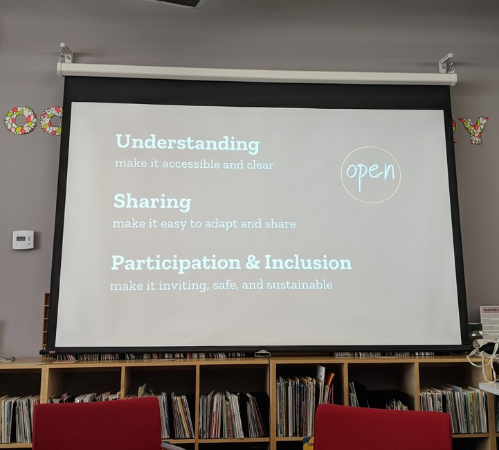

News
Floe at OCAD University's Open Education Week Event
Members of the Floe team recently participated in OCAD University's Open Education Week event, Guerilla Education! A Very Hands-On Open Education Week Event.

One of panelist Jairus Khan's slides, about elements of openness.
Moderated by Floe team member Jess Mitchell of the Inclusive Design Research Centre, the panel event brought together a diverse range of speakers from inside and outside OCAD University to talk about openness, education and innovation.
Another Floe team member, IDRC developer & researcher Alan Harnum, particularly liked panelist Amy Buckland's point that the long-term sustainability of open educational resources is closely tied to their accessibility and inclusion:
And I love this point in particular by @jambina: making open access content truly AODA compliant will also support its long-term health around preservation, continued access, future-proofing. (the "robustness" piece of the #a11y #wcag POUR model) #OEWeek
— Alan Harnum (@waharnum) March 8, 2019